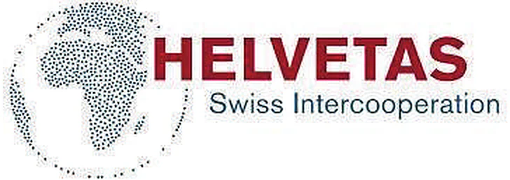
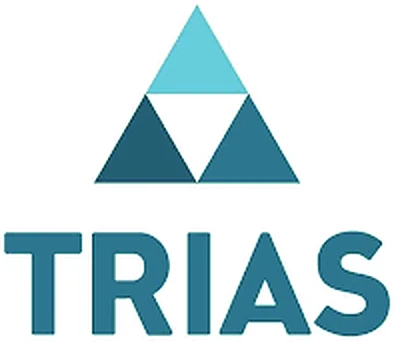
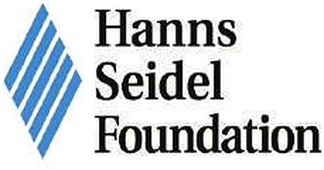
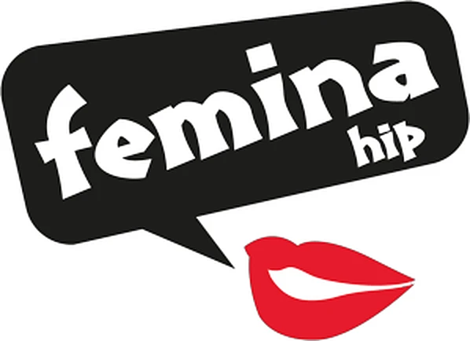
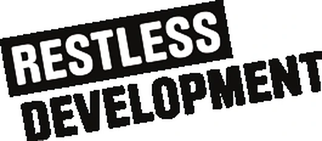
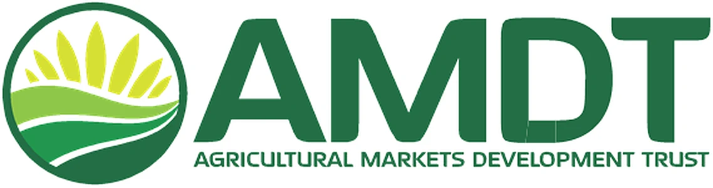
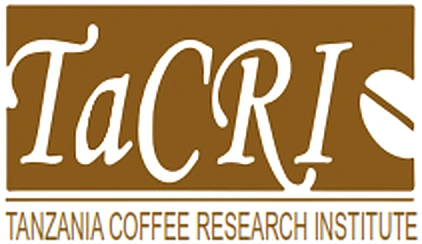
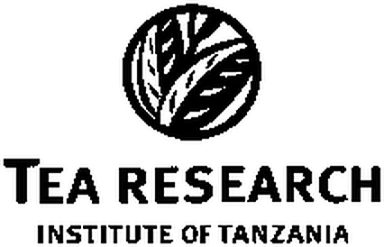
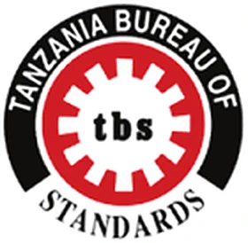

Home / About
A Tanzanian consultancy built on evidence and trust.
FDSC is a Tanzanian development and management consultancy. Since 2014 we have helped government, development partners, foundations, NGOs and businesses find out what works, strengthen the people and systems behind it, and prove the results.
Frontline Development Services Consulting Limited (FDSC) is a Tanzanian firm providing development and management consulting services. We were established and registered in 2014 under the Companies Act, 2002, with one ambition: to be the consulting firm that public and private organisations trust for pragmatic, innovative and sustainable solutions.
We work where research, evaluation, policy, capacity building and organisational strengthening meet. That mix lets us do more than report on a programme: we help our clients turn strategy into results they can measure, and keep improving after we leave.
Our consultants are qualified and experienced in monitoring and evaluation, gender, governance, agribusiness and organisational development. Many of our clients come back to us again and again, for support that runs well beyond the contract period.
Purpose
What drives us.
To be the premier consulting firm in Tanzania and the wider East African region, trusted for pragmatic, innovative and sustainable solutions that transform institutions and communities.
To empower ministries, departments and agencies, companies, foundations, international and local NGOs and SMEs through high-quality, results-oriented and client-centred consulting that builds capacity and delivers measurable, lasting impact.
Our core values
- 01Quality
We hold every assignment to the highest professional and technical standards.
- 02Results
We focus on outcomes that matter, and on showing them with evidence.
- 03Client focus
We listen first, then shape each solution around the client's real needs.
- 04Innovation
We bring fresh, practical thinking to long-standing development problems.
- 05Timeliness
We deliver on schedule, because our clients' time and plans depend on it.
Why FDSC
Why clients choose us.
Our experts attract clients who want continuing support, well beyond the contract period.
- 01A decade of proven work
More than ten years and 28 assignments across Tanzania and Zanzibar since 2014.
- 02Trusted by leading institutions
International development partners, government, foundations and the private sector.
- 03Multidisciplinary team
Consultants in M&E, gender, governance, agribusiness and organisational development.
- 04Deep sector knowledge
Coffee, tea and horticulture value chains, governance, gender, human rights and youth.
- 05Tailor-made solutions
Context-specific, practical designs instead of one-size-fits-all approaches.
- 06Nationwide reach
Fieldwork from Kigoma to Kilimanjaro, the Southern Highlands, Unguja and Pemba.
- 07Clients who return
Solidaridad, the Ministry of Finance and Planning, Rikolto and HELVETAS have hired us repeatedly.
Five organisations account for 17 of our 28 assignments.
Who we work with
Clients and partners.
- Ministries, departments and agencies
- Development partners
- Foundations and philanthropy
- International and local NGOs
- Companies and CSR programmes
- Cooperatives and SMEs









Programmes we have evaluated and supported were funded by the European Union, Irish Aid and the Belgian Development Cooperation (DGD), among others.

Let’s build lasting impact together.
Tell us about your programme, evaluation or capacity need. We reply within two working days with a first view of how we can help.